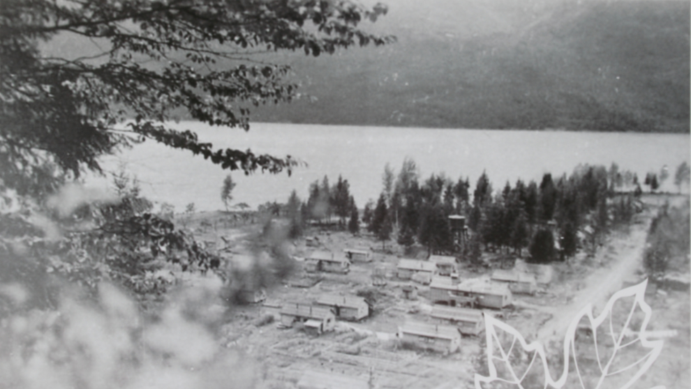
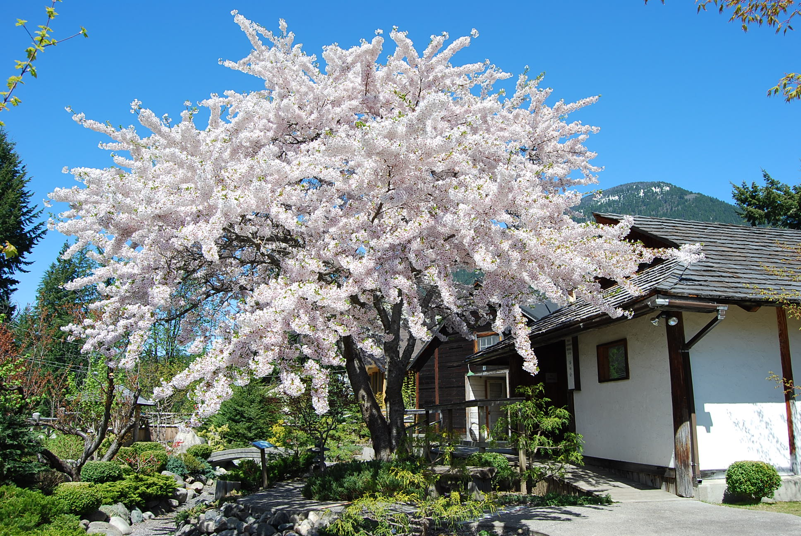
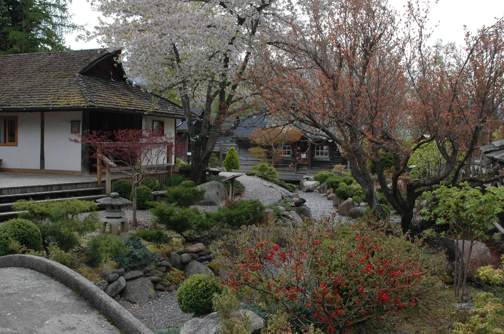
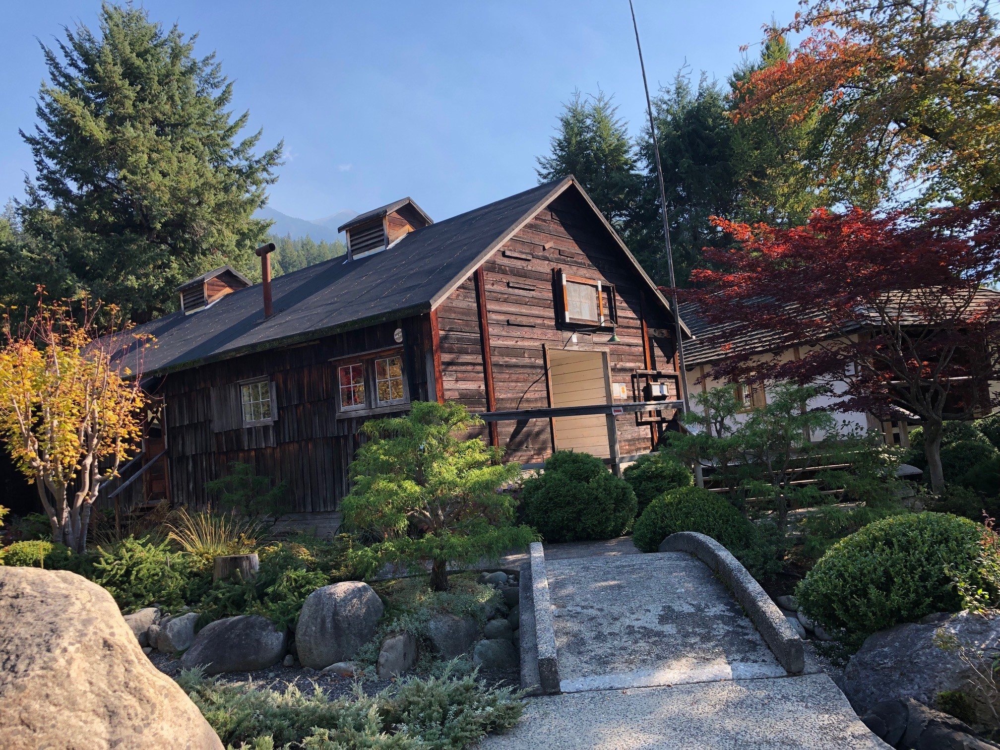
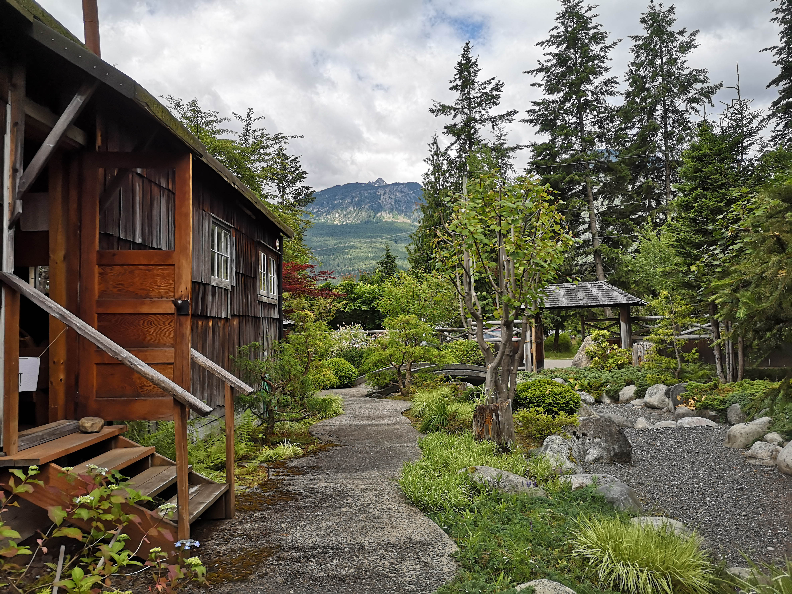
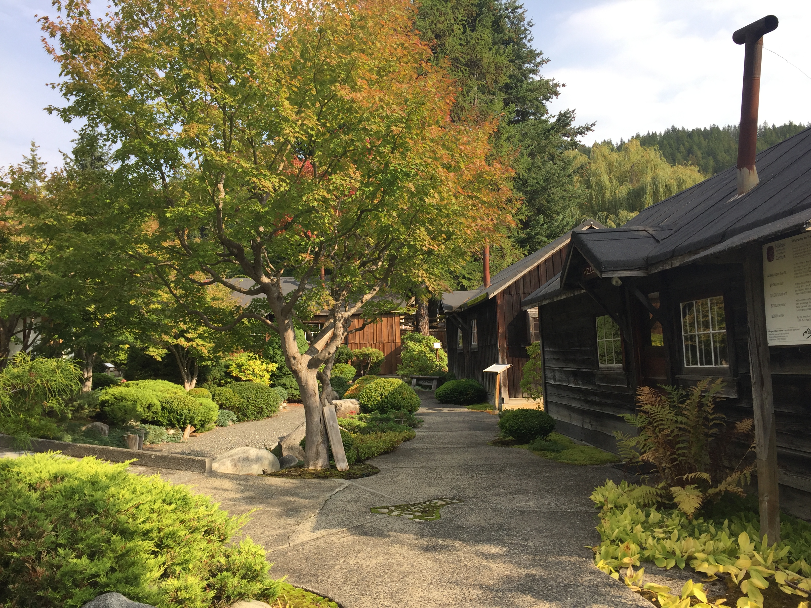
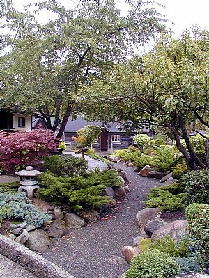
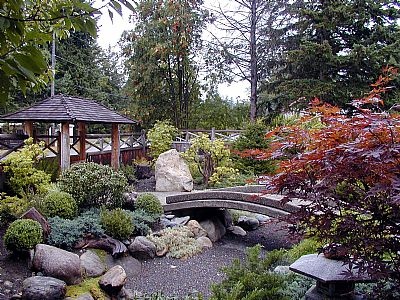

Welcome
The Nikkei Internment Memorial Centre is a National Historic Site dedicated to telling the story of the more than 22,000 Japanese Canadians who were forcibly relocated during the Second World War.
Located on the site of the former “Orchard” internment camp in New Denver BC, the Centre preserves original buildings and presents period items and interpretive displays that share this history.

Entrance Arch
Welcome to the Nikkei Internment Memorial Centre
Nikkei (nee-kay): anyone of Japanese descent who has left Japan.
At the time of internment, Japanese Canadians had lived along the West Coast of British Columbia for sixty-five years, raising two generations of Canadian-born children. Most of the more than 22,000 Nikkei interned during the Second World War were Canadian citizens by birth.
At the end of the war, all internees were forced out of British Columbia “east of the Rocky Mountains” or sent to Japan. They could not return until 1949, a period Japanese Canadians call the “Second Uprooting.”
All other internment camps were closed and demolished, except for this New Denver “Orchard” camp. Approximately 2,000 infirm Japanese Canadians were transferred here, living in shacks vacated by healthy internees who had been forcibly removed.
Japanese Canadians received a federal redress settlement in 1988, and in 2022, the Province of British Columbia formally recognized the injustices committed.
This centre is a place of remembrance. Here, we honour those who suffered, bear witness to their experiences, and commit to learning from this history so it is never repeated.

Visitor Reception Centre
The exterior of this building reflects the design of dwellings built by Japanese Canadian internees under the direction of the British Columbia Security Commission. Like the original internment shacks, it is 14 × 28 feet, timbered and milled by internees, with a single entry and gabled dormer.
The fir shiplap siding has weathered over time, and the shrinkage caused by the use of “green” lumber is still visible.
The interior has been fully renovated and modernized to serve as the Visitors’ Reception Centre.


Fire and Water Display
Fire bucket stands were placed throughout the Orchard and provided the only firefighting equipment during internment. The buckets had rounded bottoms to discourage their use for other purposes. They were filled with sand, and water was used when available.
At first, water had to be carried by hand from the lake. In 1943, standpipes were installed to improve access. Each standpipe supplied water to four to six households for drinking, cooking, washing, and laundry.
The “L”-shaped bar extending from the wooden box connected to a valve below the frost line, which controlled the flow of water to the spigot.

Carved Stump
Japanese Canadian Fire Fighters
The names carved into this cedar tree belong to Japanese Canadian Firefighters from the Lemon Creek Internment Camp in the Slocan Valley. On July 28, 1945, they were sent to fight a forest fire on the west side of the Arrow Lakes, across from the Village of Nakusp.
This tree was discovered by Pope & Talbot Logging. The stump, along with its history, was donated to the Nikkei Internment Memorial Centre.

Shack 1942–1944
This 14 x 28 foot original building was moved to the site in 1993.
Its exterior shows later modifications, including the addition of cedar shakes and sliding windows, which made the shelter more livable. These improvements were likely made after the first winter, shortly after people began living here.
The earliest shacks were built quickly with green wood to provide basic shelter for the internees, who had initially been housed in tents until construction of the shacks was completed.
Inside, the shack is divided into two interpretive areas. The space on the left represents conditions when internees first arrived in 1942. The space on the right shows how living conditions had changed by 1943.
Each of these dwellings typically housed two families, often with up to six children each. In many cases, the families did not know each other before internment. There were over 200 similar size shacks in the “Orchard” area.


Outhouse
Outhouses were built along with the shacks in 1942.
One outhouse served four to six households, or up to fifty people. Each was divided into a men’s and a women’s side. These were the only toilet facilities available during internment.
Septic systems and indoor plumbing were introduced later in the 1950s.

Shack 1945–1957
This structure represents living conditions in 1957, at which point each shack was typically occupied by a single family. This shack was also moved to the site in 1993.
This house was occupied until 1985 and shows few changes from its wartime appearance. A lean-to shed at the back was used for storing firewood and household supplies.
The knob and tube wiring from the 1940s shack was replaced in 1957 by the modern electrical system displayed here. This house never had hot water, but an indoor toilet was added in the fifties.
In 1957, through an agreement negotiated by the Kyowakai Society with the British Columbia Security Commission, the provincial government deeded the “shack and pedestal of land” to the Japanese Canadian residents still living in them.


Vegetable Garden
Vegetable gardens were planted by Japanese Canadian internees soon after arriving at the Orchard. The garden provided fresh, nutritious, and affordable food during a time of rationing and scarcity. Internees also gathered wild mushrooms (matsutake) and fiddleheads from the surrounding forests.
The garden was more than a source of food — it offered a spiritual retreat, helping internees cope with difficult times.
This display shows a variety of vegetables that were typically grown by families. The garden also includes fuki, a plant brought into the interior by Japanese Canadian families and used in traditional Japanese dishes.

Peace Arch
This structure is a replica of the original Peace Arch, built in 1945 by internees who had been transferred to New Denver.
The original arch stood at the entrance to the former tuberculosis sanatorium, now the Slocan Community Hospital and Health Care Centre. It remained there until 1953, when it was demolished and burned by the Government of British Columbia after the site was repurposed as a residential school for Doukhobor children.
The unity between the arch and the fence symbolizes peace and harmony. The arch offers a bridge of welcome, and the fence represents the links between the people of all nations.


Centennial Hall
This building was constructed in 1978 by the Kyowakai Society, an organization formed during the internment. “Kyowakai” means “working together peacefully.”
The exterior design reflects elements of traditional Japanese architecture. Construction was supported in part by a Province of British Columbia community grant program, and the project was led by Kyowakai Society president Chie Kamegaya.
The hall was named Centennial Hall to mark one hundred years of Japanese Canadian presence in Canada, beginning with Manzo Nagano’s arrival on the coast of British Columbia in 1877. This centennial helped bring greater attention to Japanese Canadian history and contributed to the growing movement for redress.


Kyowakai Hall
This hall was built in 1943 by Japanese Canadian carpenters and became the religious, cultural, and social centre of the New Denver internment community.
The British Columbia Security Commission ordered the building to be demolished, due to worry about large group gatherings. However, a skilled Buddhist temple carpenter trained in the ceremonial construction of a butsudan (Buddhist shrine) built a shrine inside the hall. This helped ensure the building would remain as a place of worship.
As the largest shared space in the area, the hall served many purposes. It hosted Buddhist, Christian, and secular gatherings, including weddings, funerals, and annual ceremonies. Community events such as theatrical and musical performances, dances, films, and banquets were also held here.
The hall was home to the Kyowakai Society, which met regularly to discuss community concerns, including living conditions and ways to improve them. The Society continued to meet here until 1977, when a new community hall was built.
The Buddhist shrine remains in the hall and is still in use today. Annual Obon ceremonies have been held here since 1943. The building also now houses the collection of the Nikkei Internment Memorial Centre.


Heiwa Tien (Peace Garden)
The Heiwa Tien Peace Garden was created in 1993 by master gardener Roy Tomomichi Sumi, who had been interned north of New Denver in Rosebery.
Designed in the kare-sansui (“dry landscape”) style, the garden uses raked gravel to suggest the movement of water and to reflect impermanence and the changing nature of life.
The garden represents a journey through past, present, and future. Beginning at the “headwaters” (yesterday), north of the Kyowakai Hall, the symbolic water cannot flow directly to the sea. Instead, it is diverted (today), changing course and passing beneath two footbridges before reaching the “lagoon” (tomorrow).
The garden was created on what had been hard-packed ground. Stones were selected from nearby Sandon and carefully placed by hand. Coastal plants represent the past, while plants contributed by local residents reflect the early years of internment. The plantings around the lagoon were left to grow and change over time.
Roy Tomomichi Sumi visited the site several times during its creation, sharing his work with the community.





About the Project
By Colton Heiberg in collaboration with the Village of New Denver
Images and descriptions provided by the Village of New Denver
Basemap and landmark points developed using AGOL
April, 2026
Contact: colton.heiberg@gmail.com